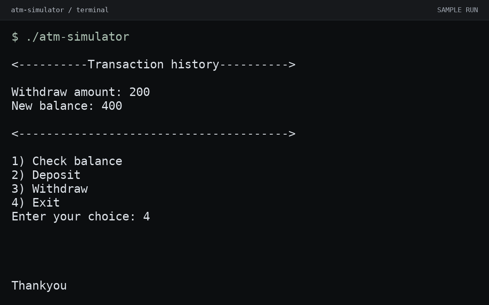
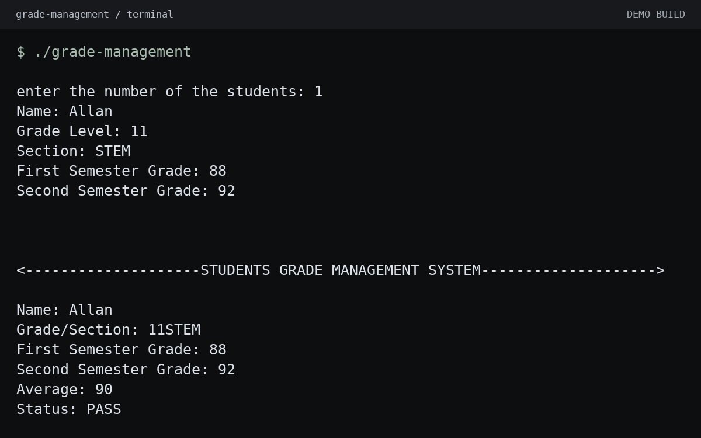
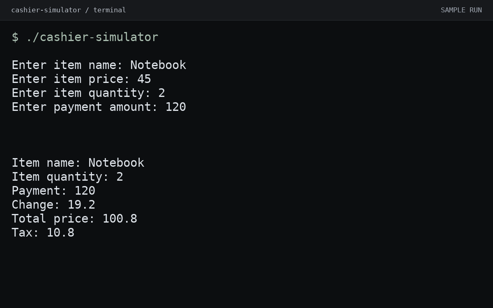
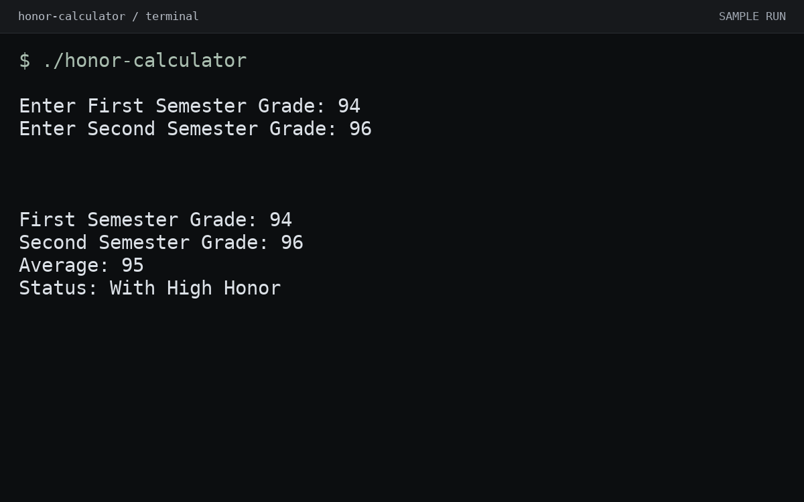
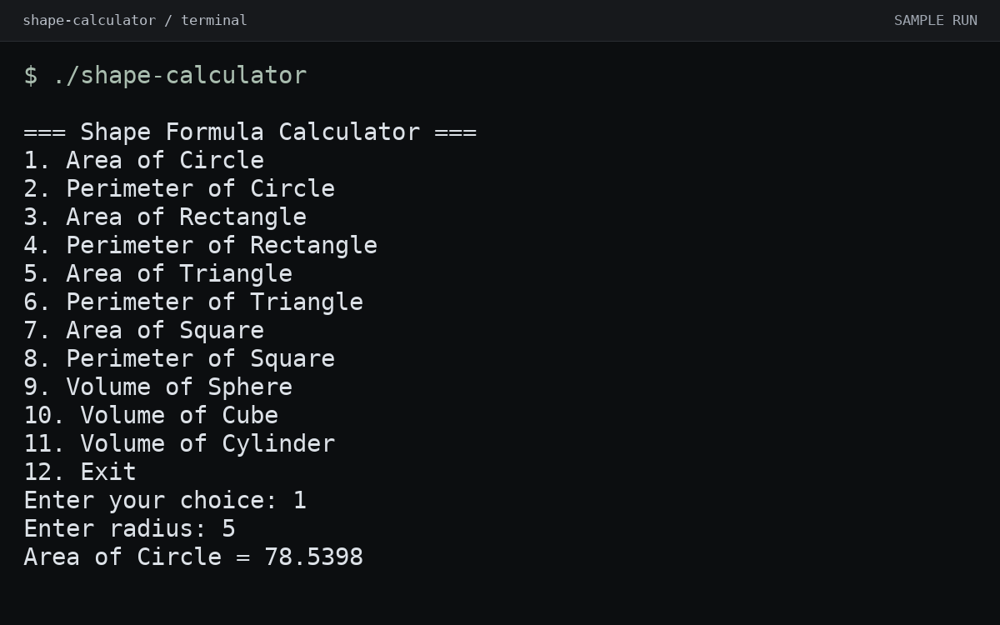
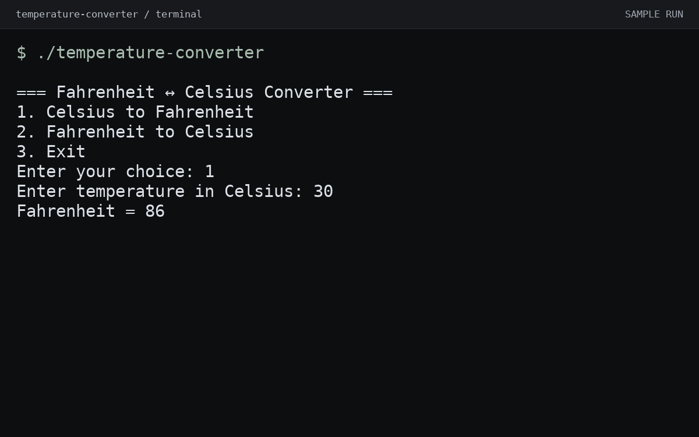
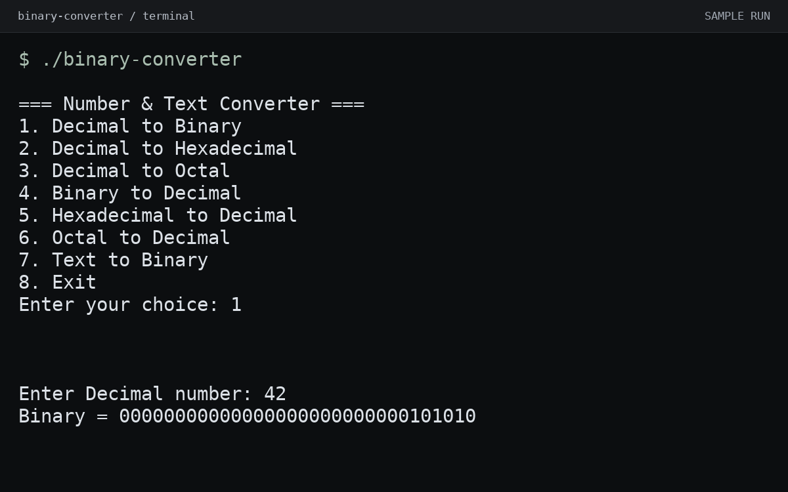
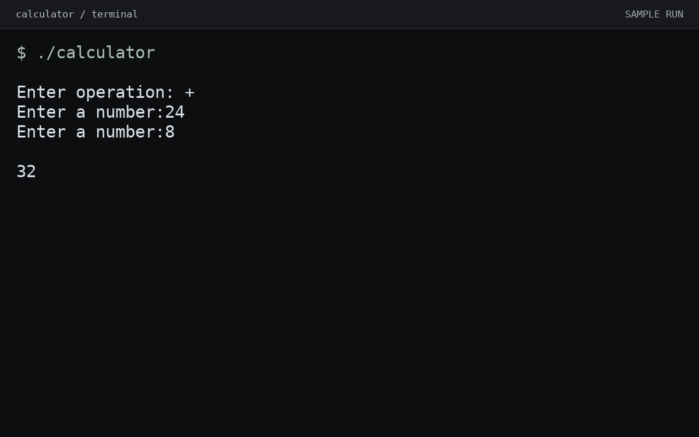

Scholog.
Offline-ready attendance for teachers, with QR check-in and daily reports.
Built for classrooms where a reliable connection can’t be taken for granted.
everything i've shipped so far — live web apps and a collection of C++ console applications. select a preview to see it larger, or explore the live apps and source code.
Offline-ready attendance for teachers, with QR check-in and daily reports.
Built for classrooms where a reliable connection can’t be taken for granted.
Plain-JS expense tracker with Supabase accounts, password recovery, monthly and weekly budgets, filters, and a category breakdown.

Console-based ATM with card and PIN verification, balance checking, deposits, withdrawals, and transaction history.

Add student records, input grades, check pass or fail status, and display all student information.
Preview uses a temporary fix for the input-order bug.
Console-based cashier program with tax and change calculation.

Averages two semester grades and determines the honor status — Highest Honor, High Honor, Honor, Excellent, or Needs Improvement.

Choose a shape and calculate its area, perimeter, or volume from the dimensions you enter.

Converts temperatures between Celsius and Fahrenheit based on user selection.

Converts numbers between decimal, binary, hexadecimal, and octal — and even text strings into binary.

Four-operation calculator (+, −, ×, ÷) built with clean switch-case logic.